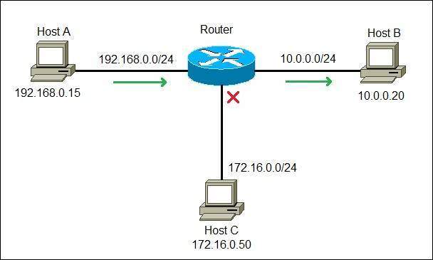

The router receives these packets, reads the destination IP address from the packet's header, and identifies which network needs to receive the data.
It consults its internal routing table, which contains rules and information about network paths.
Based on the routing table, the router calculates the most effective path for the packet to reach its destination.
The router forwards the packet to the next router or network segment on its journey.
This packet-by-packet forwarding process continues from router to router until the packet reaches its ultimate destination device.
Once the destination server responds with data, the process reverses, with the router sending the data to the correct device within your local network.
